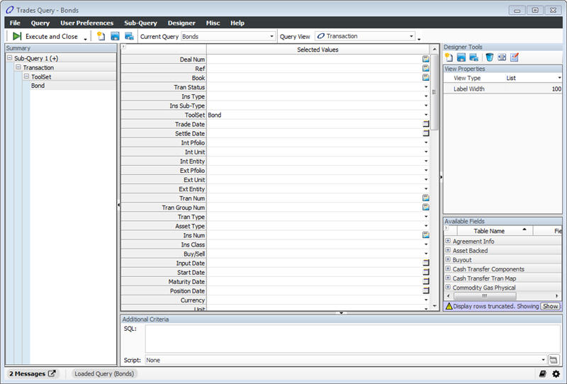
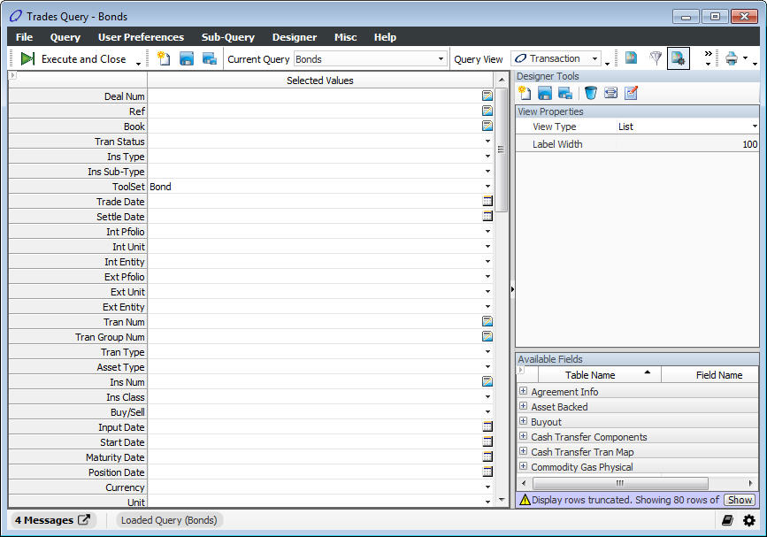
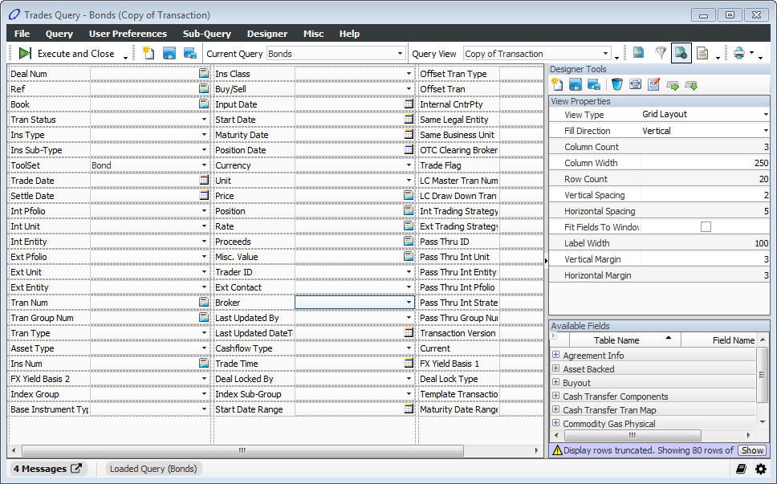
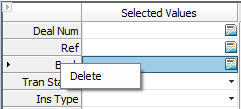
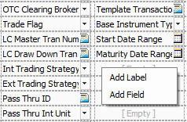
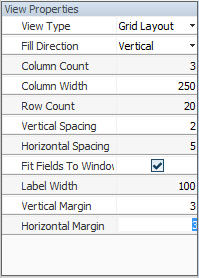
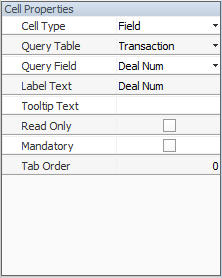
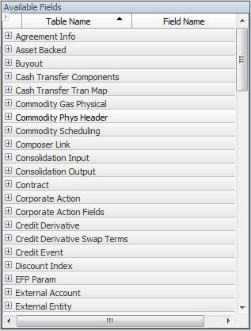

The Query Manager Designer is used to create custom Views within the Query Manager. Fields can be added, removed, changed, and ordered in custom views.
Note: The user must have Security Id 70000 in order to open and use the Designer.
1. Start the Trading Explorer.
2. Click the icon, or select Trading Explorer à Query Manager. The Trades Query window displays.
3. Select Designer à Show Designer Panel. The Designer panel displays:

Button |
Description |
Removes the data in the View Panel table. Creates a new empty view, clearing any local changes to the current view. The fields no longer display in the window. |
|
Saves the displayed query to the file name specified in the Current Query field. If the query is not previously saved, the Configure Properties window opens to enter the name of the query view. |
|
Opens the Configure Properties window. This is used to save the query view as another query view, and at the same time, allows the user to define the ownership values (for example, path, directory, owner, and group) and permissions for the query view. |
|
Removes the highlighted fields displayed in the View Panel table. |
|
Use this button to automatically re-size the fields in the Query Manager table. |
|
Use this button to add fields with values to view. |
|
Sets the horizontal tab order. |
|
Sets the vertical tab order. |
The view panel is the design surface where editors can be arranged. There are two styles of design surface:
· list
· grid
When the design panel is displayed, the design surface becomes drag-and-drop sensitive. Fields can be repositioned by dragging them to the desired location. Multiple fields can be selected by holding down the <Ctrl> key while selecting. New fields can be added to the design surface by double clicking or dragging from the available field list.
Selected (highlighted) fields can be removed by clicking the icon.
The List layout is the default for all new views and displays the configured fields as a vertical list.
To change the view, Go to the Properties panel and select List in the View Type field.

The Grid Layout allows the user to place editors and labels into a row/column configuration.
To change the view, go to the Properties panel and select List in the View Type field.

Right-click on an existing editor (field) to display the following context menu.

Menu |
Item |
Delete |
Removes the current field. |
Right-click on an empty location to display the following context menu.

Menu |
Item |
Add Label |
Creates a new label. |
Add Field |
Creates a new field. |
The View Properties panel displays the properties of the currently selected item in the View panel. When no editor is currently selected, the View Properties Panel shows the properties for the view. Below is a full list of the View properties. Properties that do not apply to the current view type are hidden.

Field |
Item |
View Type |
List or Grid view, as described above. |
Fill Direction |
When a new field is added to the view, this property determines if the field will be added to the right or below the previous field. |
Column Count |
The number of columns to be shown in the view. |
Column Width |
The width of the columns in the view. |
Row Count |
The number of rows to be shown in the view. |
Vertical Spacing |
The spacing between rows in the view. |
Horizontal Spacing |
The spacing between columns in the view. |
Fit Fields to Window |
If this property is set to true the columns will be sized to fit within the view panel (No horizontal scroll bars). |
Label Width |
The width of the label portion of the editors. |
Vertical Margin |
The spacing between the top/bottom edges of the view panel and the editors. |
Horizontal Margin |
The spacing between the left and right edges of the view panel and the editors. |
When a cell is selected in the View Panel, the cell’s properties are shown in the Designer’s property panel. Below is a full list of cell properties. Properties that do not apply to the current view type are hidden.

Field |
Item |
Field Type |
Editor or Label |
Query Table |
The query table to which this field is bound. |
Query Field |
The query field to which this field is bound. |
Label Text |
The text to be displayed in the label portion of the field. |
Display Row |
The row in which this editor should be displayed. |
Display Column |
The column in which this editor should be displayed. |
Tooltip Text |
The tooltip to be displayed when the user hovers the mouse over the field. |
Read Only |
If this property is set to true, the field is “display only.” |
Mandatory |
If this property is set to true, the field MUST be filled in before the query is allowed to execute. |
Tab Order |
Determines the order of the fields the cursor will go to when tab is pressed. |
New fields can be added to the design surface by double clicking or dragging from the available field list. The available field list can be sorted, filtered, or grouped (Select All Children right-click menu) to assist in quickly finding fields.

Right-click on an available field to display the following context menu.
Field |
Item |
Expand Group |
Shows all available fields listed under the selected group. |
Collapse Group |
Hides all available fields listed under the selected group. |
Expand All |
Shows all available fields listed under all groups. |
Collapse All |
Hides all available fields listed under all groups. |
Select All Children |
Selects all available fields listed under the selected group. |
Unselect All Children |
Unselects all available fields listed under the selected group. |